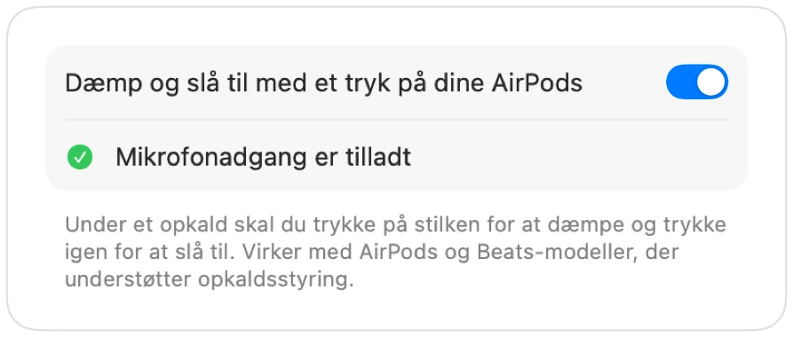

Sådan dæmper du Google Meet med AirPods på en Mac
På en iPhone dæmper et tryk på stilken af dine AirPods et opkald. På en Mac kører Google Meet i Chrome, og Chrome sender ikke dette tryk videre til websider. Du trykker, hører en fejllyd, og Meet bliver ved med at sende din stemme.
Muffle løser dette ved alle Meet-opkald. Appen modtager selv trykket på dine AirPods og dæmper din Macs mikrofon, så der er helt stille i Meet, selv når fanen ligger i baggrunden.
Dæmp Google Meet med dine AirPods
- 1
Installer Muffle, og tillad mikrofonadgang, når du bliver spurgt.
- 2
Deltag i dit Google Meet-opkald i Chrome, Safari, Arc eller Edge.
- 3
Tryk én gang på stilken af dine AirPods for at dæmpe. Muffle-ikonet bliver rødt.
- 4
Tryk igen for at slå lyden til. Du kan også trykke på Control-Alternativ-M fra enhver app.

- Meet viser muligvis stadig din mikrofon som aktiv, fordi Muffle dæmper selve mikrofonen frem for knappen i Meet. Alle hører stilhed, så længe Muffle-ikonet er rødt.
- Slå „Start alle opkald dæmpet“ til for altid at deltage i Meet dæmpet.
Spørgsmål og svar
Hvorfor dæmper et tryk på mine AirPods ikke Google Meet?
Chrome understøtter ikke macOS-funktionen til dæmpning med AirPods under webopkald, så macOS har ingen app at sende trykket til. Muffle bliver netop den app.
Er Meets egen tastaturgenvej ikke nok?
Meets genvej Kommando-D virker kun, når Meet-fanen er forrest. Muffles genvej og tryk på AirPods fungerer fra alle apps.